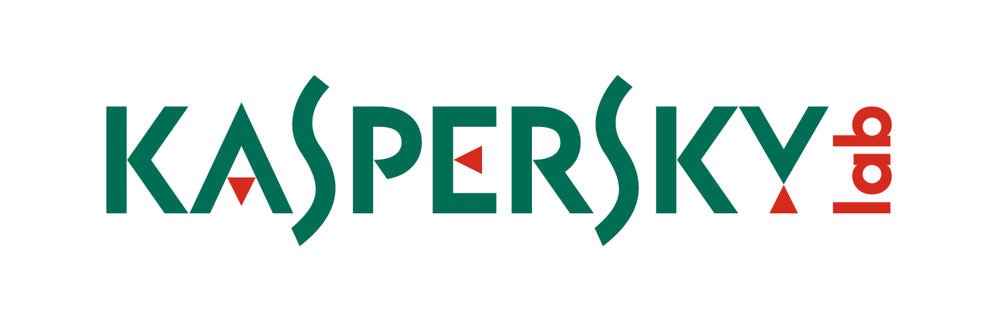

HackingSec
ANTIVIRUS
Un antivirus es un tipo de software que se utiliza para evitar, buscar, detectar y eliminar virus de una computadora.
Una vez instalados, la mayoría de los software antivirus se ejecutan automáticamente en segundo plano para brindar protección en tiempo real contra ataques de virus.
Bitdefender Total Security
Incluye protección contra el ransomware, con herramientas de privacidad
También existe la posibilidad de usar VPNs, la interfaz es sencilla de manejar por muchos usuarios sean expertos o novatos
La protección está muy organizada, desde cosas sin relevancia alguna hasta operaciones bancarias, con revisiones de vulnerabilidad y gestores de contraseñas.
Sus principales usos son:
La defensa antimalware definitiva para sus datos
Superrápido. No invasivo
Protege sus transacciones online
Revela las actividades online de sus hijos
Bitdefender desarrolla continuamente soluciones de seguridad que obtienen los máximos galardones y alcanzan lo más alto del ranking. Desde 2001, Bitdefender ha subido el listón continuamente en materia de seguridad. Desde los particulares a las grandes empresas, las innovaciones de Bitdefender fomentan la confianza, y la libertad para dirigir el negocio, defendiendo la integridad de los datos y la marca.
Kaspersky
Si hablamos de protecciones a tiempo real, este es uno de los mejores antivirus, no sólo protege de ransomware, sino de cryptolockers, virus y spyware
Revisiones frecuentes y rápidas, ya que no sólo se busca la sencillez sino la rapidez también
Es fácil de usar, interfaz amigable y con soporte en caso de incidencias, sea por voz o teléfono


Norton
Definición 1
También protege contra ransomware, incluye backups en nube, lo cual no tenían ninguno de los anteriores, y una protección sobre el firewall y exploits
Definión 2
También tienen gestores de contraseñas, y tienen actualizaciones frecuentes
Windows Defender
¿Por qué, os preguntaréis, por qué Windows Defender?
Es gratuito, y relación calidad-precio obviamente estamos hablando del mejor antivirus, contamos con:
Protección a tiempo real y en nube
Defensa Firewall y red
SmartScreen, es una característica de este antivirus que nos protege de redes extrañas y no tan conocidas